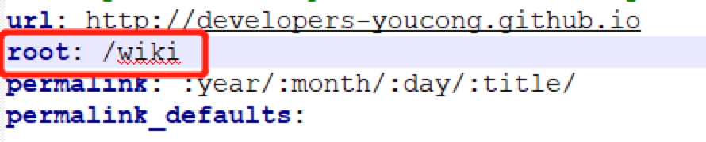

This document is not completed and will be updated anytime.
1. Deployer not found: git 报错
我已经在站点配置文件中写入了:
1 | Copy |
但是执行hexo d报错
1 | ERROR Deployer not found: git |
解决方案
这是因为没有安装hexo-deployer-git插件,在站点目录下输入下面的命令安装插件就好了
1 | npm install hexo-deployer-git --save |
然后使用hexo d命令部署就行了
2. hexo d 后域名返回404
git deploy之后发现个问题，访问自己的域名返回404；
查看github的Custom domain发现已经被还原为空值。
解决方法如下：
- 配置正确的Custom domain
- 到source目录下，创建CNAME文件，并在里面写入自定义的域名。
- 重新发布。
hexo clean && hexo generate && hexo deploy
3. hexo 报错 Cannot read property ‘replace’ of null
详细错误信息:
1 | FATAL Cannot read property 'replace' of null |
关键信息: Cannot read property ‘replace’ of null
问题原因:我为了将我的wiki链接到hexo修改了root路径，如下图所示:

解决办法
(将root改为原来的/即可解决这个问题):
这个/相当于默认指向developers-youcong.github.io
4. hexo server能看见页面，hexo g 空页面
本地 hexo generate产生的 public 文件夹，发现不仅 index.html，很多其他文件也都是 zero bytes
原因是，
hexo 与 node 的版本不兼容，要么 node 过高，要么 hexo 过低
本地安装的 hexo 版本: ./node_modules/hexo/bin/hexo --version
1 | hexo: 3.9.0 |
解决问题
降级 node
先看看如何降级 node。
先卸载再重装是可以的，且简单粗暴，但并不想这么做，因为已有很多其他项目的前端代码也依赖当前版本的 node，如果因为降级 node 版本而带来未知的影响得不偿失。网上又 Google 了一番，发现有 nvm 这个好东西，可以随时切换指定版本的 node，就它了。
1. 安装 nvm
先是 brew install nvm ，但执行完后，尝试 nvm 命令时却提示 command not found，按照文中网友说法，通过 brew 安装存在 bug，可用如下脚本安装，
curl -o- https://raw.githubusercontent.com/nvm-sh/nvm/v0.39.1/install.sh | bash
在 Mac 下如果遇到如下错误，
./install.sh: line 416: /Users/sherlockyb/.zshrc: Permission denied
直接进到 nvm 的默认的 git 目录 ~/.nvm，然后执行 sudo ./install.sh，可以看到安装脚本会转而使用 .bash_profile文件，
Appending nvm source string to /Users/sherlockyb/.bash_profile
安装结束后，重新打开 terminal 查看 nvm 版本如下，表示安装成功。
sherlockyb@07L0220100005DD sherlockyb.github.io % nvm --version 0.39.1
用 nvm 降级 node 到 12.14.0
用法很简单，两行命令就搞定，
nvm install 12.14.0 nvm use 12.14.0
这里需注意，nvm use 只是临时切换 node 版本，只适用于当前 terminal，如果打开新的 terminal，node 还是之前的旧版本。如果想要永久切换的话，可使用如下命令，
nvm alias default 12.14.0
然后再查看 node 版本如下，已经降级了
sherlockyb@07L0220100005DD sherlockyb.github.io % node --version v12.14.0
此时再通过 ./node_modules/hexo/bin/hexo --version 查看 hexo 及其依赖包的版本时如下，node 版本已经变了。
1 | hexo: 3.9.0 |
2. 安装node版本管理模块
1 | sudo npm install n -g |
最后检查自己node版本号
1 | node -v # v14.17.4 |
3. 重新生成HTML
清除并重新 generate，
./node_modules/hexo/bin/hexo clean ./node_modules/hexo/bin/hexo g
然后再查看 public 文件夹，会发现 index.html 已经正常生成了，打开后内容也是正常。最后本地预览一下，网站各项功能都没啥问题。
部署
最后通过 ./node_modules/hexo/bin/hexo d 部署到GitHub Pages，网站恢复正常。
升级 hexo
没有试过，但总体来说降级npm更方便
5. hexo server后，image显示不出来
用google浏览器查看网页源码，发现html中路径是/figure.png，没有生成绝对路径，而是保持了md文件中的相对路径；
网上搜索后发现，是缺少一个包（之前为了升级hexo删掉了）：插件的名字叫 hexo-asset-image
1 | npm install https://github.com/CodeFalling/hexo-asset-image --save |
重新删除public文件，hexo server，图片展示正常！
参考：
https://www.cnblogs.com/codecheng99/p/12380810.html
https://www.cnblogs.com/youcong/p/10786343.html